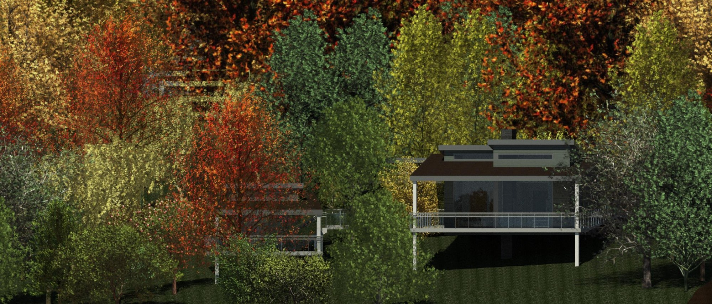
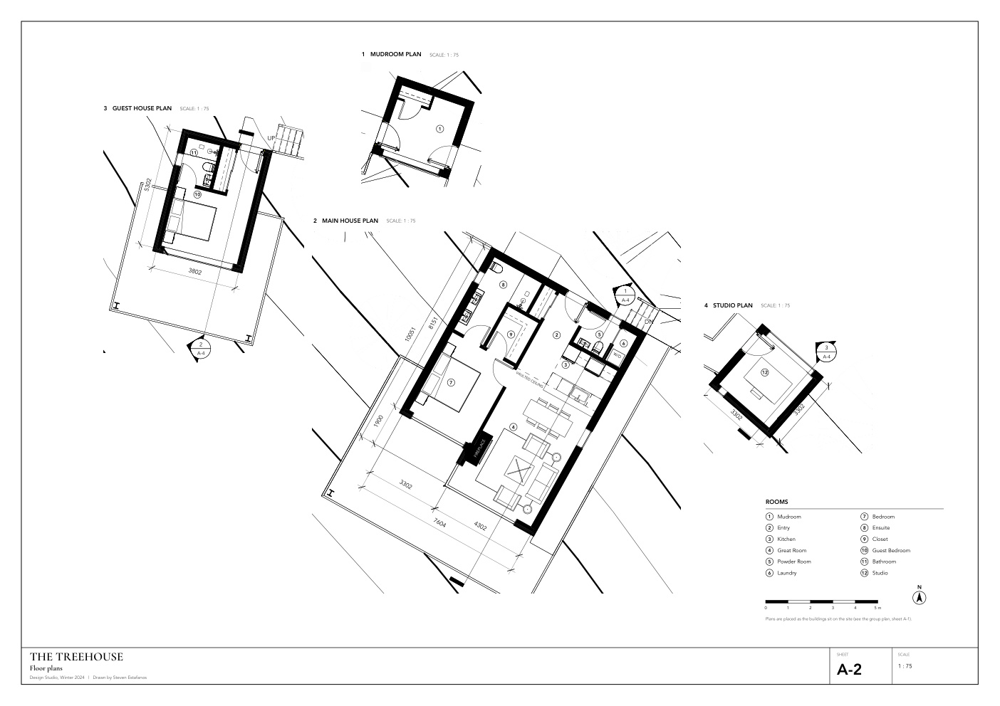

Design Studio, Winter 2024
Muskoka Cottage
Concept The Treehouse
A lake cottage in Muskoka as four small buildings joined by exterior walkways and raised on stilts, so the forest on a steep, rocky site is left largely as it is.

- Brief
- Cottage on Lake Muskoka near Port Carling, ON, for a fictional couple, one of them a painter
- Site
- About 2,200 m², sloping to the lake, with bedrock close to the surface
- Organization
- Four buildings joined by exterior walkways: mudroom, main house, guest house, studio
- Programme
- Painting studio with north light, sealed fireplace, dining for six to eight, guest area, fire pit, parking for two cars
- Area
- 93 m² of enclosed rooms measured to the inside of the walls (about 1,001 ft²), or about 124 m² (about 1,340 ft²) measured to the outside of the walls. Roof-space storage reached by a hatch is left out of both.
Software and media
- Model, drawings and renderings
- Revit
- Sketches
- Pencil
- Concept study model
- 3D printing, cardboard, model trees, clay, paint
The brief and the site
A term design project. Bedrock close to the surface ruled out a full basement.
First idea: one building
The design began as a minimal structure based on a Toronto-area condominium floor plan, kept small. Living and bedroom areas were on the lower floor, with a large covered south-facing deck to open the views to the water, and the entry and an artist's loft with north-facing windows were on the upper floor. That scheme gave a simple but striking gable roofline and a vaulted living room, and a skylight was added to bring in sunlight because the covered deck shaded the windows.
Pulling it apart: The Treehouse
The roof carried forward into the next iteration, The Treehouse, named for its many "branches": exterior corridors that connect the mudroom, main house, guest house and studio. The branching plan lets unused parts of the cottage, such as the guest house, stay unheated while the rest is in use, which improves energy efficiency and gives each wing privacy.
Stilts and deep roofs
The buildings stand on stilts. The aim was to limit tree removal and disturbance of the site; one tree had to be removed so that the main house would fit.
Large overhangs, inspired by Frank Lloyd Wright's Prairie style, reduce solar heat gain through the large panoramic windows and shade the walkways, porches and decks. The resulting roofline allows transom windows on all southern elevations, which let winter light in and block the high summer sun, reducing the need for mechanical cooling. Awning windows ventilate the cottage in summer by letting hot air escape.
Testing it: the concept model
A concept study model: the four buildings 3D-printed as massing, set on a site with cardboard contours, a painted lake and hobby-scale trees. Its plan dimensions are to scale. Contour heights, tree sizes and building positions are approximate, and the real site is steeper than the model.
The resolved design

Drawing set, 4 sheetsSite plan, floor plans, elevations and sections Four A2 sheets, with a group plan and a table of room areas. Each drawing has its own scale bar. Open in the viewer to measure.